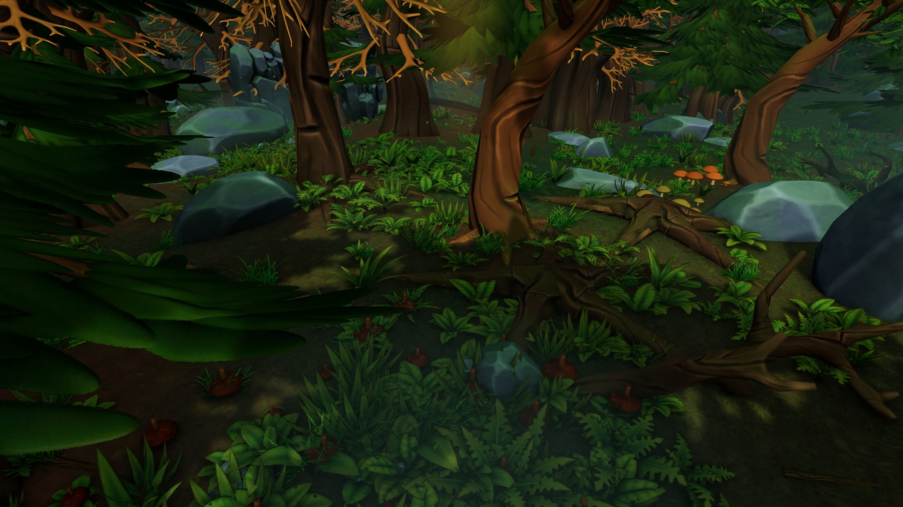
The game
In the Shadow of a Shnork
In development
The game is the forest of the book, built to be walked through. The current private build covers the first chapters: waking in the moss, hunger, the stream and the gouges, building a nest, the silent night and the chase, the scrap of hide, the Others — and the first offering.
Filmed in the forest
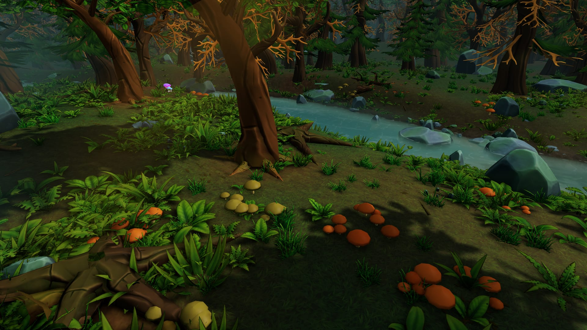
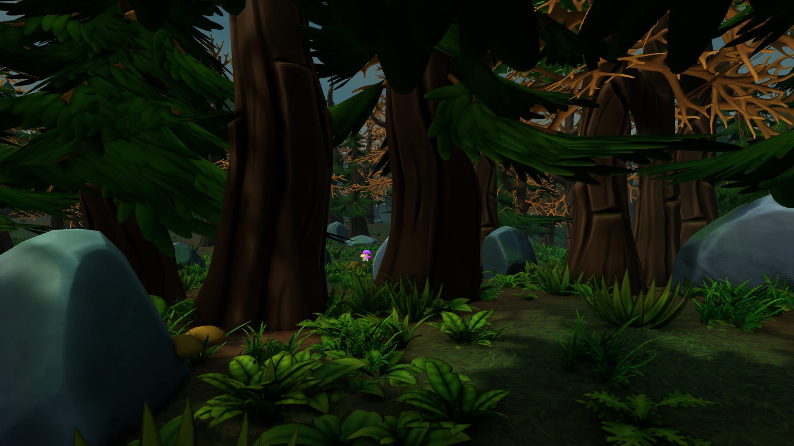
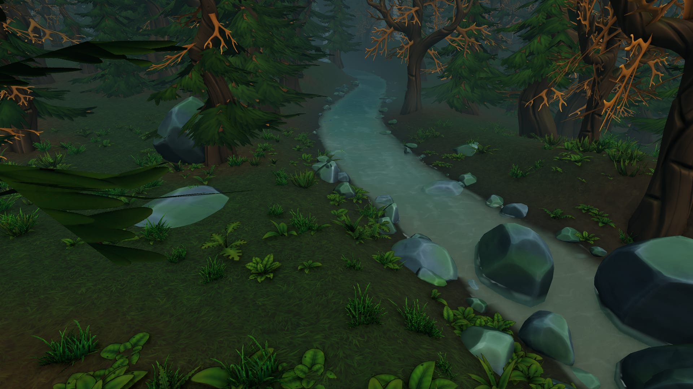
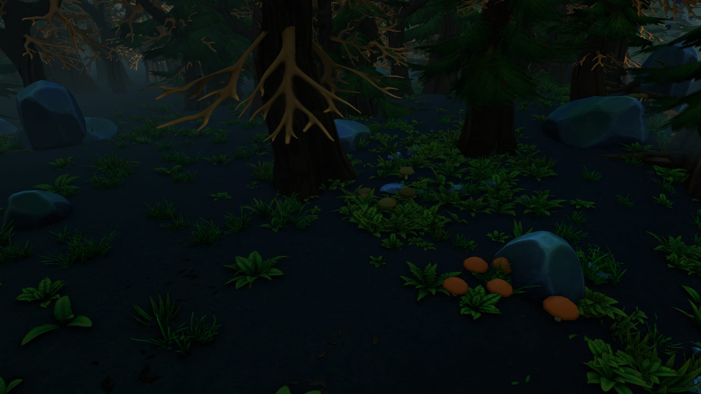
From the page to the world
“The forest had no paths—only choices.”
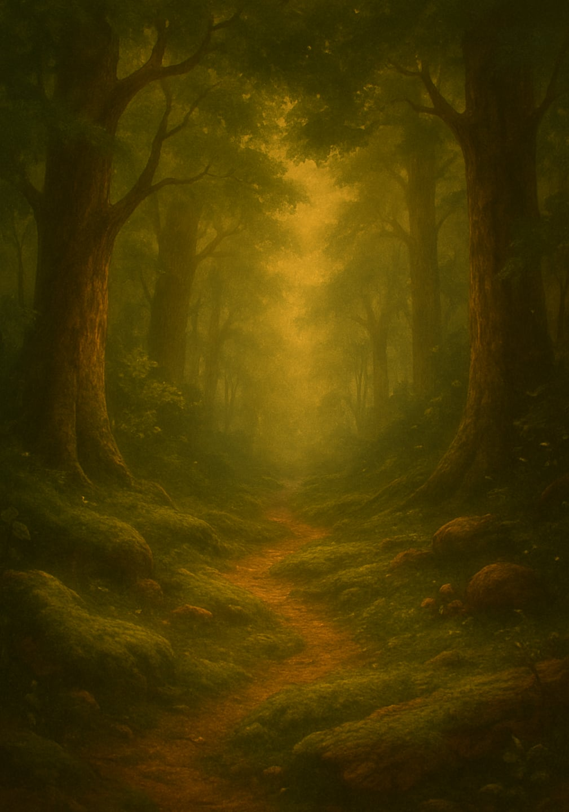
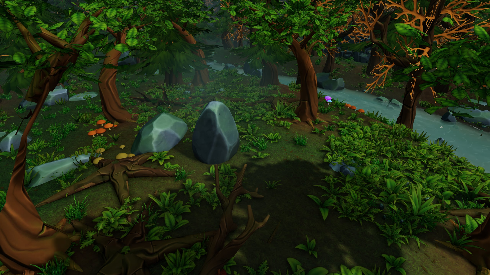
“When I found the stream, I fell to the ground and drank deep, cold water filling the hollow place in my chest.”
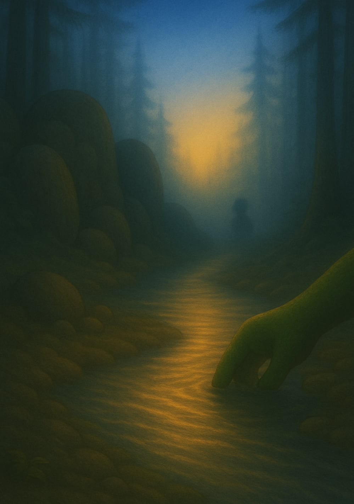
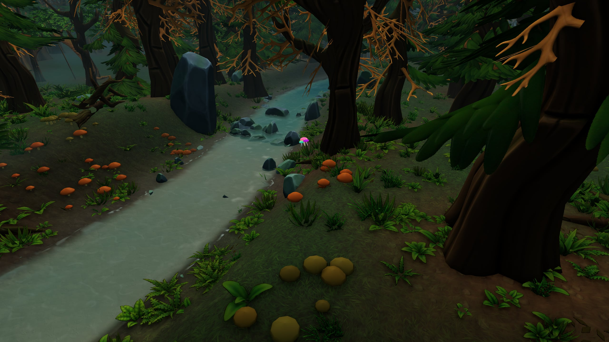
“Stars blinked between the leaves.”
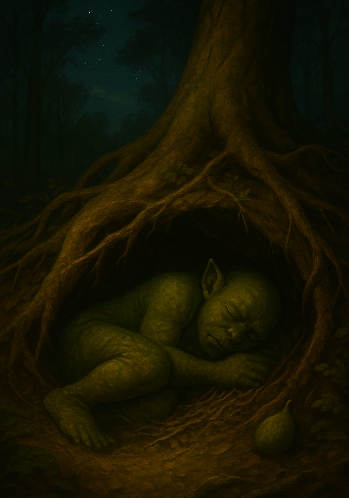
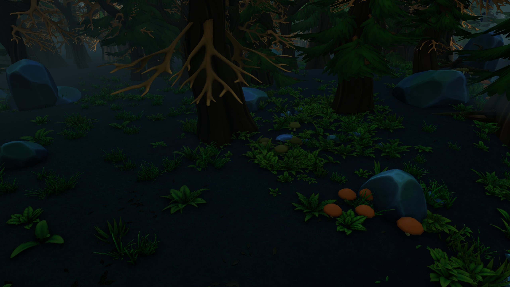
“Sunlight dripped in weak lines through the leaves above, golden and dusted with motion.”
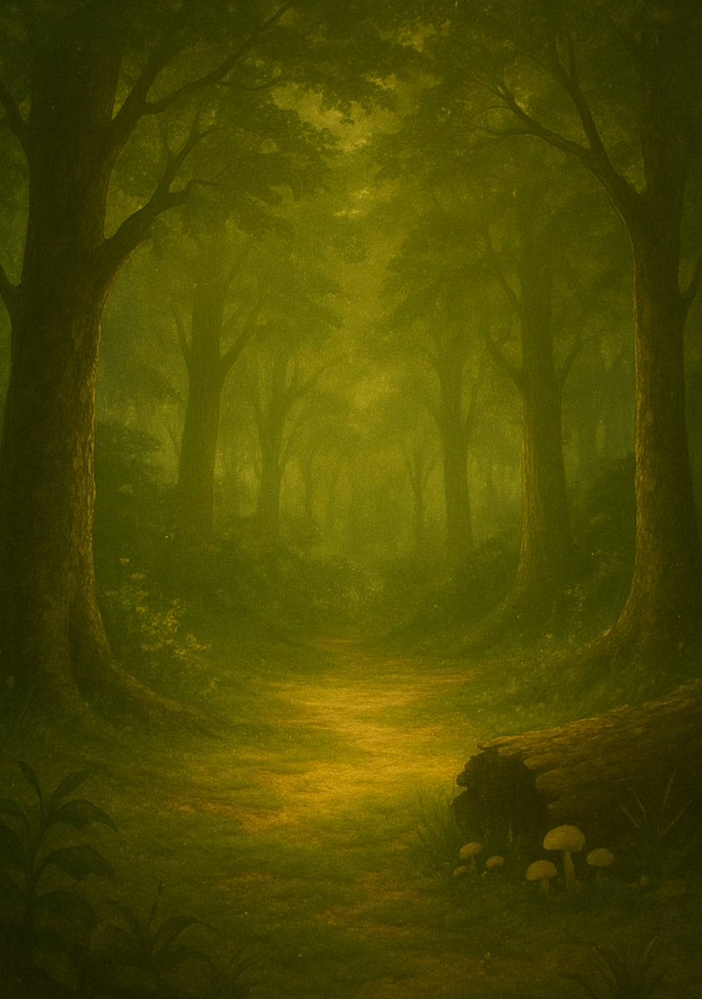
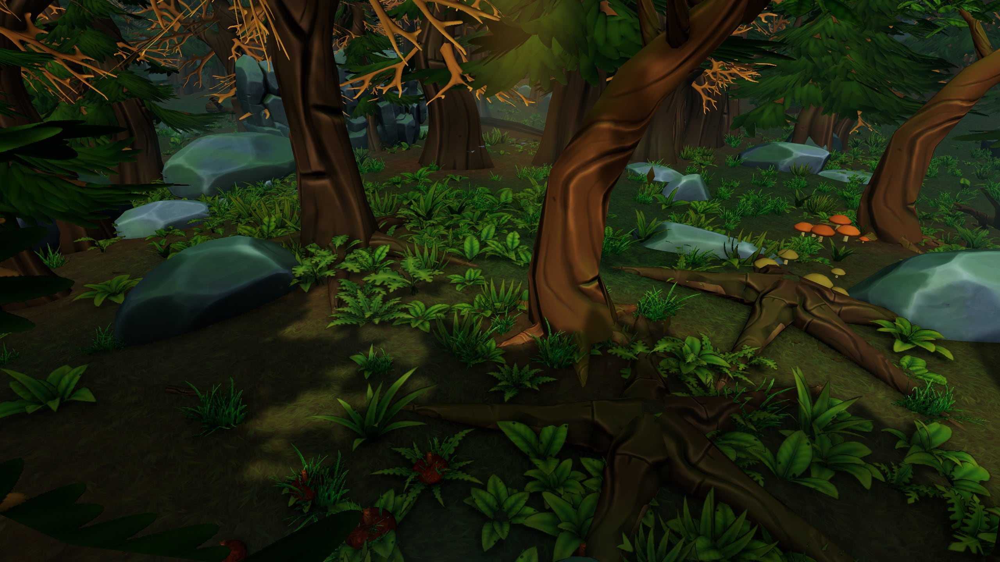
Game films are captured from the current development build of the game (0.5.0) in the game's own light, most with the game's own follow camera. The characters are still being refined against the book’s artwork, so they are not shown here yet.
Where it stands
The game is being built alongside the book. The forest already has weather, day and night, water, wildlife and sound. Release details will be shared here when they exist.